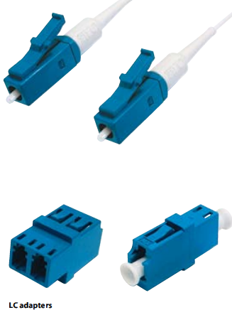

LC standard
- Miniature connector with push-pull mechanism.
- Zirconia miniature ferrule 1.25 mm.
- PC polishing procedures.
- Standard connector type meets the demands of units,
used in the telecommunication networks.
- Standard connector in the transmission networks and
active components of the largest telecommunication
operators.
- According to norm EIA/TIA 568A, FOCIS 10, IEC 11801,
Bellcore.
Connector
- Twice smaller than SC or E2000 standard connector.
- Zirconia ferrule ensures very good resistance at the
changing temperatures (operating temperature range
from -40 °C to +85 °C).
- Machine polishing procedure ensures high quality
of end face geometry and high repeatable performance.
- End face geometry is controlled with an interferometer.
Adapter
- Twice smaller than SC or E2000 standard adaptor.
- high packing density.
Connection type
- The Push - Pull coupling mechanism guarantees
high protection and stability of the connection.
Connector type
- Single mode and multimode connectors.
- Simplex and duplex connectors.
- Following cables can be equipped with this connector
type: 900 um tube or PVC cables with the following
diameters: 1.6 and 2.0 mm.
Application
- Telecommunication, external and access networks.
- WDM networks.
- LAN/WAN networks, Fibre to the Desk - solution.
- CATV networks
